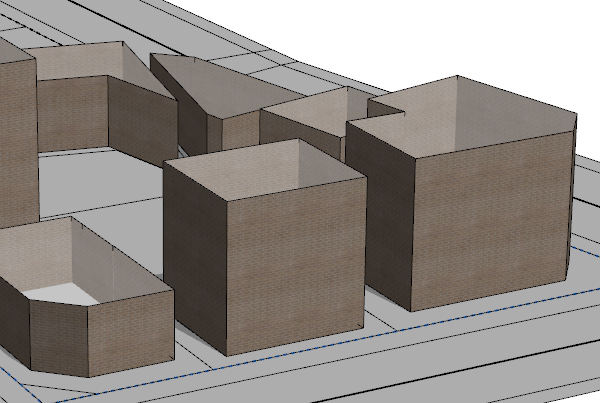

texture operation
texture(filePath)
filePath string Name of the texture file to insert. See Asset Search for information about search locations and Built-in Assets for a list of built-in textures. Supported image formats are listed in Texturing Essentials.
The texture operation uses the file specified in filePath to texture the current shape by setting the colormap and, if applicable, the opacitymap attribute. The texture operation is a convenience version of set(material.colormap,..) and (if applicable) set(material.opacitymap,..). The opacitymap attribute is set if the texture contains an alpha channel or is reset to an empty string otherwise.
Note: The texture operation does not create texture coordinates.
Related
Examples

brickMap = "assets/bricks.jpg"
randBuildingHeight = rand(3,20)
Lot -->
s('.75,'1,'.75)
center(xz)
extrude(world.up, randBuildingHeight)
comp(f) {
side : Facade |
top : set(material.color.a, .3) Roof.
}
Facade -->
setupProjection(0, scope.xy, 5, 5)
texture(brickMap) // = set(material.colormap,brickMap)
projectUV(0)